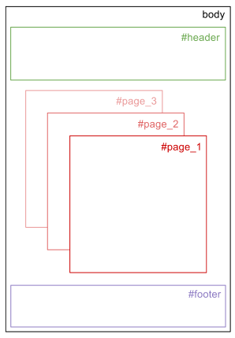
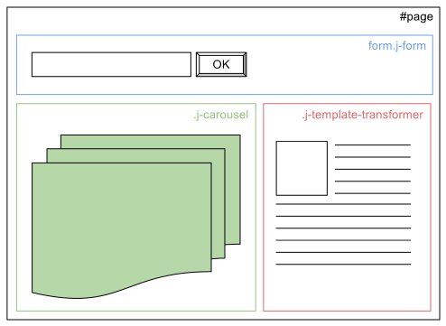

Tuna MVC является реализацией парадигмы MVC, прекрасно подходящей для комплексных web-приложений. Основными преимуществами реализации Tuna MVC являются:
Основной частью большинства web-приложений является отображение. В общем виде приложение состоит из дерева контейнеров с отображением.

Рисунок 1. Дерево контейнеров отображения.
Каждый контейнер содержит различные компоненты отображения, такие как кнопки, фор- мы, списики выбора, и тд.

Рисунок 2. Пример контейнера.
Для организации данной структуры служат следующие классы: